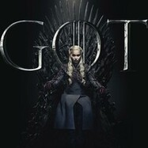

Autres projets
Si tu as aimé mon contenu et que tu souhaites en savoir plus sur la pollution numérique, tu devrais aimer ces projets.

- DryOasis par Gaël Pardonnet

- Nociweb par Elora Perrin
- The dark side of Facebook par Hugo Rallu
- 
- W-foulness par David Philippe
- Digital Pollution Alternative par Théo Reille

- MemoRage par Lucie Petit

- AInteractive par Matéo Rivaud

- Toxiweb par Mohamed Rihi
- The game of pollution par David Rivera
- Polluweb par Yanis Salmi
- Numeric Galaxy par Simon Quiévreux